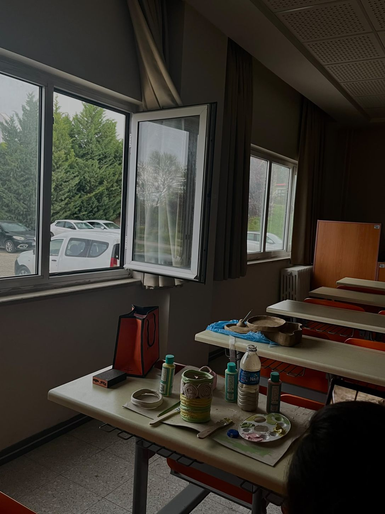
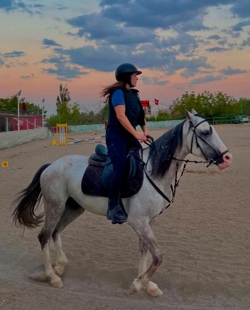
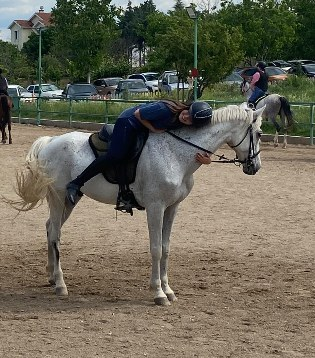
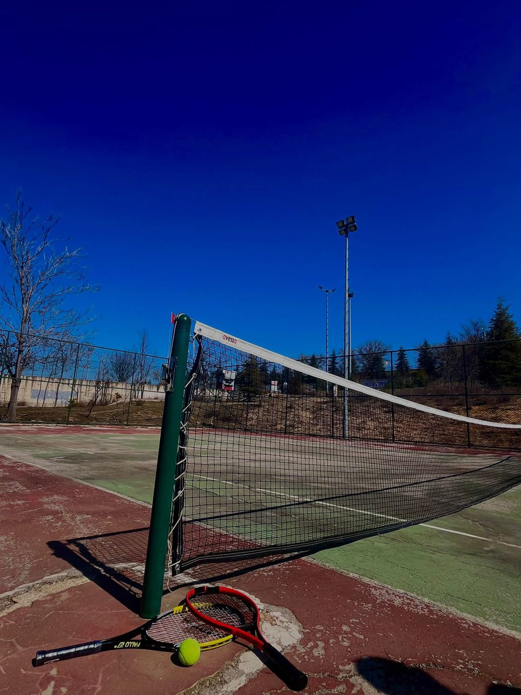
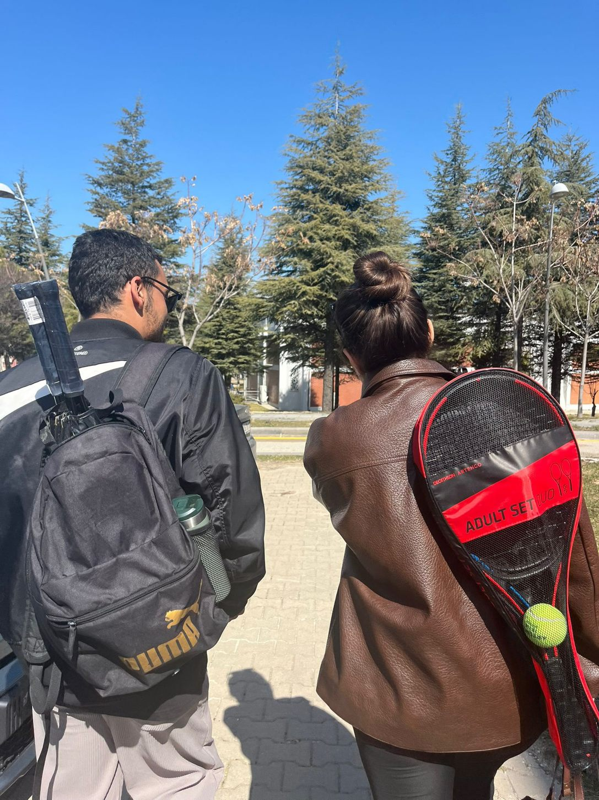
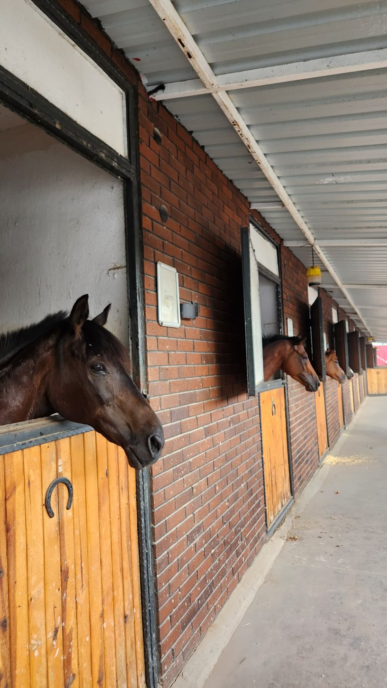
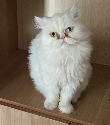
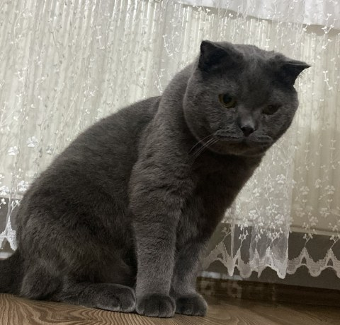

01 / SLOW MOMENTS
Ceramics & painting
There's something calming about shaping and painting something by hand. I love slowing down, trying new colors and enjoying the creative process.
A LITTLE ABOUT ME
I'm a 23-year-old Geomatics Engineering student at Hacettepe University, originally from Rize, Türkiye.
I would describe myself as energetic, friendly, and curious. I enjoy discovering new places, meeting people, and making memories beyond everyday routines.
Get to know me
ACADEMIC JOURNEY
HACETTEPE UNIVERSITY
Fourth-year student
My studies have introduced me to the many ways we can understand the world through spatial data. I'm especially interested in remote sensing and satellite imagery, and I hope to build my future career in this field.
BEYOND THE CLASSROOM
Horseback riding holds a special place in my life. What began as an interest has become a genuine passion.
I love the connection between horse and rider, the quiet moments outdoors, and the feeling of freedom that comes with every ride. Even on busy days, time with horses gives me something to look forward to.
I also enjoy traveling and exploring new places, whether it's a new destination or simply a change of scenery.


SMALL JOYS, BIG MEMORIES
When I'm not studying maps or riding horses, I love making things with my hands and spending time on the tennis court.

There's something calming about shaping and painting something by hand. I love slowing down, trying new colors and enjoying the creative process.

Tennis brings out my energetic side. Whether I'm practicing or playing for fun, I enjoy being active and sharing the moment.


A PLACE CLOSE TO MY HEART
Horseback riding is more than a hobby to me; it's a genuine passion. Time with horses at my riding club is something I always look forward to.
Find it on my Ankara map ↗LITTLE THINGS I LOVE
Family, new experiences, and two cats who make ordinary days a little more interesting.


Explore what I'm learning and building with geospatial technologies.
Explore Projects →